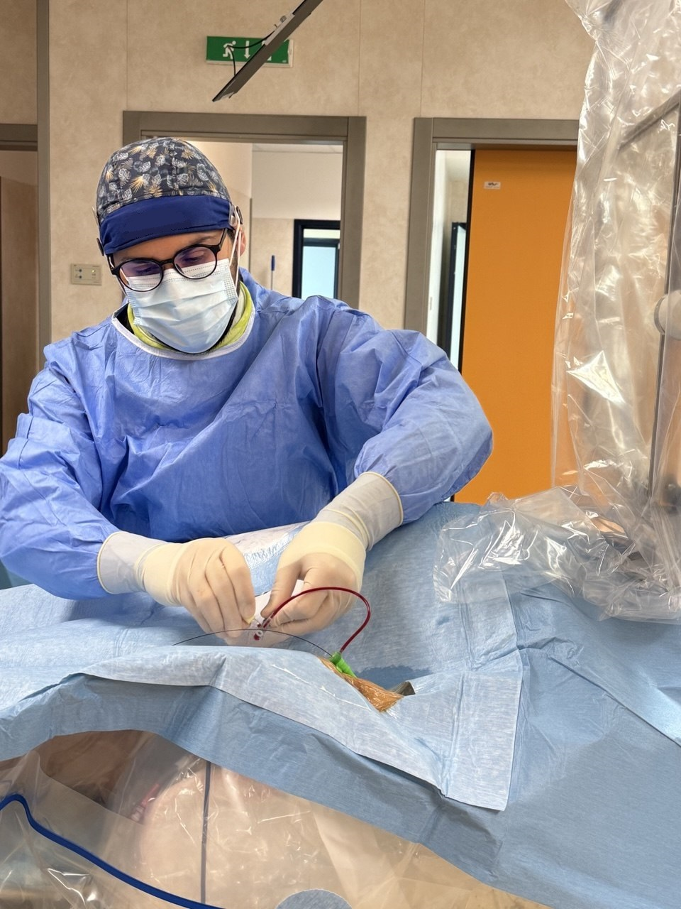

Medicina e Chirurgia
Laurea Magistrale presso l’Università Magna Graecia di Catanzaro, con tesi sperimentale in Cardiologia sulla trombosi coronarica nell’infarto miocardico acuto.
Profilo professionale
Mi occupo di prevenzione e trattamento delle patologie cardiache, con attività clinica e interventistica rivolta principalmente alla coronaropatia e alla cardiopatia ischemica: esami e tecnologia aiutano a comprendere il problema; la valutazione clinica orienta le scelte.
Formazione
Laurea Magistrale presso l’Università Magna Graecia di Catanzaro, con tesi sperimentale in Cardiologia sulla trombosi coronarica nell’infarto miocardico acuto.
Specializzazione in Malattie dell’Apparato Cardiovascolare presso lo stesso Ateneo, con formazione in emodinamica e tesi sull’angioplastica coronarica con pallone medicato.
Dopo l’esperienza come dirigente medico cardiologo presso il Presidio Ospedaliero di Lamezia Terme, proseguo la mia attività professionale presso l’AOU “Renato Dulbecco” di Catanzaro, dove mi occupo quotidianamente di cardiologia interventistica.
Rivesto il ruolo di dirigente medico cardiologo presso il Presidio di Germaneto dell’AOU “Renato Dulbecco” di Catanzaro, con attività quotidiana in emodinamica.
In cardiologia interventistica mi occupo soprattutto della diagnosi e del trattamento della cardiopatia ischemica acuta e cronica mediante coronarografia, angioplastica coronarica e tecniche di valutazione intracoronarica quando indicate.
Alla parte procedurale affianco la prevenzione, la gestione dei fattori di rischio e il controllo nel tempo della cardiopatia ischemica.

Metodo
Ogni esame deve rispondere a una domanda clinica precisa.
Linee guida e studi orientano le decisioni, ma non sostituiscono il giudizio sul singolo caso.
Benefici, rischi, alternative e margini di incertezza vanno spiegati in modo comprensibile.
La medicina migliore non è quella che fa più esami. È quella che usa le informazioni giuste per prendere la decisione migliore nel momento opportuno.
La medicina non offre certezze, ma probabilità. Decidere significa pesare benefici, rischi e conseguenze, intervenendo solo quando il beneficio atteso giustifica i rischi e le conseguenze della scelta terapeutica.
Prestazioni
Indicazioni essenziali su visita cardiologica, ecocardiogramma e coronarografia.